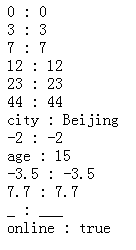
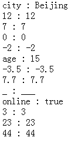

根据 ECMA-262（ECMAScript）第三版中描述，for-in 语句的属性遍历的顺序是由对象定义时属性的书写顺序决定的。
关于 ECMA-262（ECMAScript）第三版中 for-in 语句的更多信息，请参考 ECMA-262 3rd Edition 中 12.6.4 The for-in Statement。
在现有最新的 ECMA-262（ECMAScript）第五版规范中，对 for-in 语句的遍历机制又做了调整，属性遍历的顺序是没有被规定的。
关于 ECMA-262（ECMAScript）第五版中 for-in 语句的更多信息，请参考 ECMA-262 5rd Edition 中 12.6.4 The for-in Statement。
新版本中的属性遍历顺序说明与早期版本不同，这将导致遵循 ECMA-262 第三版规范内容实现的 JavaScript 解析引擎在处理 for-in 语句时，与遵循第五版规范实现的解析引擎，对属性的遍历顺序存在不一致的问题。
Chrome Opera 中使用 for-in 语句遍历对象的属性时，遍历出的属性顺序与对象定义时不同。
在使用了 for-in 遍历对象属性，并且依赖属性顺序的脚本中，该问题可能造成脚本报错，功能失效。
| Chrome Opera |
|---|
Chrome Opera 中使用 for-in 语句遍历对象属性时会遵循一个规律，它们会先提取所有 key 的 parseFloat 值为非负整数的属性， 然后根据数字顺序对属性排序首先遍历出来，然后按照对象定义的顺序遍历余下的所有属性。其它浏览器则完全按照对象定义的顺序遍历属性。
分析以下代码：
<script type="text/javascript"> window.onload = function(){ var obj = { city: "Beijing", 12: 12,
7: 7, 0: 0, "-2": -2, "age": 15, "-3.5": -3.5, 7.7: 7.7, _: "___", online: true, 3: 3, "23": "23", "44":
44 }, info = document.getElementById("info"), key; for(key in obj){ info.innerHTML += key + " : " +
obj[key] + "<br/>"; } } </script> <div id="info"></div>
以上代码测试了对象属性 key 为正负整数及小数、字符串和符号的情况下 for-in 语句遍历的顺序。执行代码，各浏览器中表现如下：
| Chrome Opera | IE6 IE7 IE8 Firefox Safari |
|---|---|
|  |  |
经测试该问题与文档模式、属性 value 的数据类型以及对象是否是直接量创建的无关。
可见，Chrome Opera 的 JavaScript 解析引擎遵循的是新版 ECMA-262 第五版规范。因此，使用 for-in 语句遍历对象属性时遍历书序并非属性构建顺序。而 IE6 IE7 IE8 Firefox Safari 的 JavaScript 解析引擎遵循的是较老的 ECMA-262 第三版规范，属性遍历顺序由属性构建的顺序决定。1
【注】：IE6 IE7 IE8 Firefox Safari 浏览器的 JavaScript 解析引擎完成时间早于 ECMA-262 第五版规范发布时间，他们均遵守第三版规范，这无可厚非。
for-in 语句无法保证遍历顺序，应尽量避免编写依赖对象属性顺序的代码。如果想顺序遍历一组数据，请使用数组并使用 for 语句遍历。 如果想按照定义的次序遍历对象属性，请参考本文针对各浏览器编写特殊代码。
| 操作系统版本: | Windows 7 Ultimate build 7600 |
|---|---|
| 浏览器版本: |
IE6
IE7 IE8 Firefox 3.6.10 Chrome 7.0.544.0 dev Safari 5.0.2(7533.18.5) Opera 10.62 |
| 测试页面: | for-in.html |
| 本文更新时间: | 2010-10-09 |
for-in object property 遍历 顺序